← 返回阅读库 · 原论文目录
论文讲解阅读文档 · 论文精读 · v257
颠覆10年共识！马斯克叹服！Kimi：AttnRes
视频时长 00:08:29；讲解文字 2,934 字符；提取讲解画面 171 张。按视频原顺序阅读，每段文字保留时间戳。
文字来自整段视频的自动语音转写，按自然停顿分段，并与 PPT / 论文页面 / 演示画面对齐。未将讲解压缩为摘要；术语、数字和口述公式请结合画面及原论文核对。 阅读稿已校正规范部分明确术语误识别；原始逐字稿和每处修改记录另行保留。
讲解画面为源视频截图（640×360），不是可编辑 PPT 文件。全片按每秒 2 帧扫描内容变化，逐步展开页保留；连续动画保留代表画面。清晰度受源视频限制。
下载完整资料包 · 含离线 HTML、PDF、Word、全部 PPT 画面和字幕。
原论文与材料
Attention Residuals · 下载完整 PDF（21 页）
按时间阅读
00:00:00–00:00:04 · 画面 001
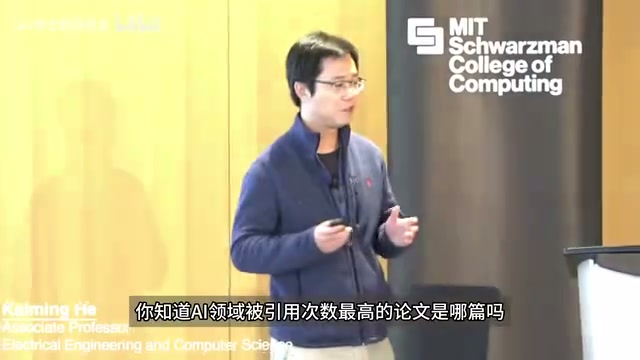
00:00:00–00:00:04 · 画面 001你知道 AI 领域被引用次数最高的论文是哪篇吗？没错，就是何恺明大佬的 ResNet 残差连接。它在 Google Scholar 上的引用次数已经超过了 31 万次。你所听过的包括 GPT、DeepSeek 豆包在内的几乎所有 AI 大模型都离不开残差连接。然而就在这周，一份来自 Kimi 团队的论文 Attention Residuals
00:00:04–00:00:05 · 画面 002
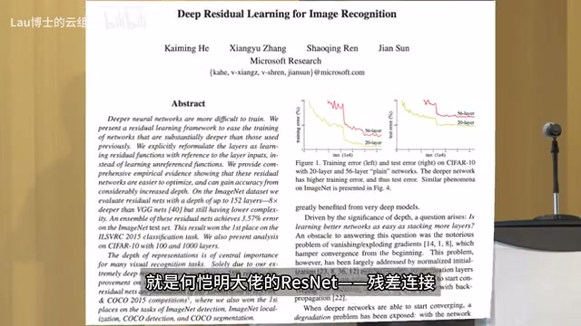
00:00:04–00:00:05 · 画面 00200:00:05–00:00:08 · 画面 003
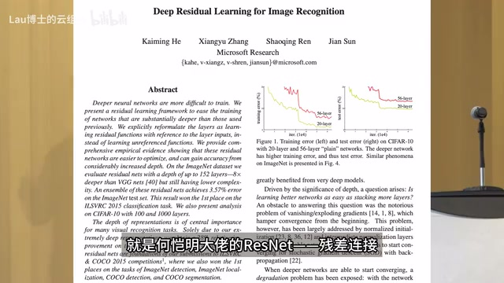
00:00:05–00:00:08 · 画面 00300:00:08–00:00:12 · 画面 004
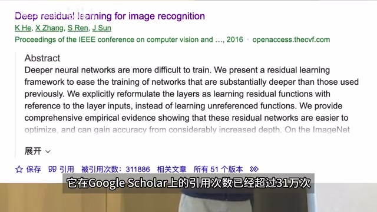
00:00:08–00:00:12 · 画面 00400:00:12–00:00:16 · 画面 005
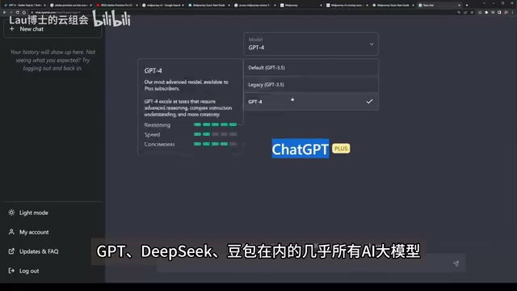
00:00:12–00:00:16 · 画面 00500:00:16–00:00:20 · 画面 006
00:00:16–00:00:20 · 画面 00600:00:20–00:00:24 · 画面 007
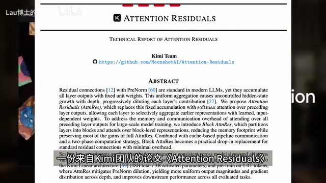
00:00:20–00:00:24 · 画面 007打算挑战这个使用了整整十年的铁律。OpenAI 的推理模型之父 Jerry Tworek 看完后激动的说，我们可能需要重新思考一切。就连马斯克都表示惊叹。而且你可能想不到，这份可能开启深度学习 2.0 时代的论文缔作者竟然是一位 17 岁的高中生。这个故事要从一个看似简单的问题说起，为什么越深的神经网络反而越难训练？
00:00:24–00:00:28 · 画面 008
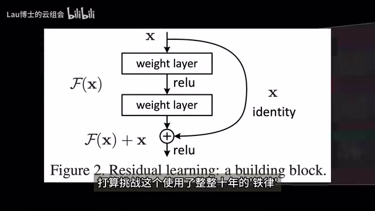
00:00:24–00:00:28 · 画面 00800:00:28–00:00:31 · 画面 009
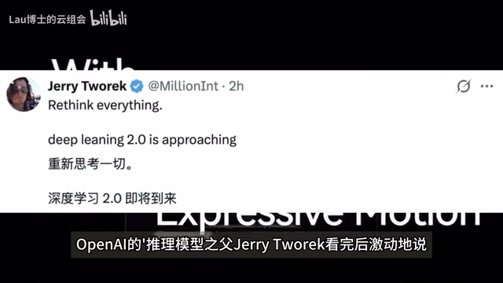
00:00:28–00:00:31 · 画面 00900:00:31–00:00:35 · 画面 010
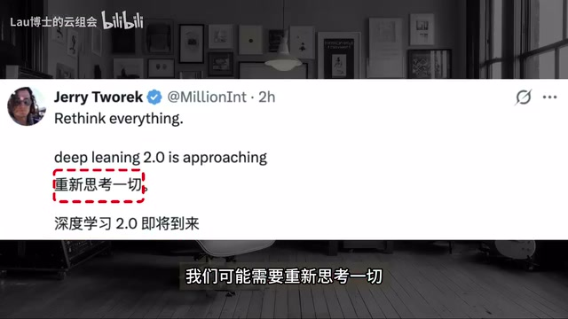
00:00:31–00:00:35 · 画面 01000:00:35–00:00:39 · 画面 011
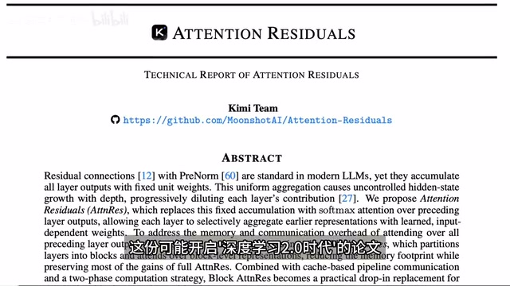
00:00:35–00:00:39 · 画面 01100:00:39–00:00:43 · 画面 012
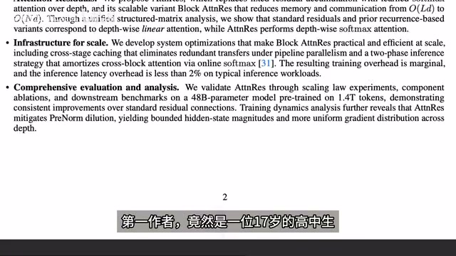
00:00:39–00:00:43 · 画面 01200:00:43–00:00:47 · 画面 013
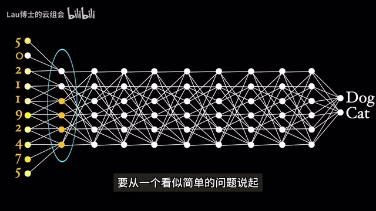
00:00:43–00:00:47 · 画面 01300:00:47–00:00:48 · 画面 014
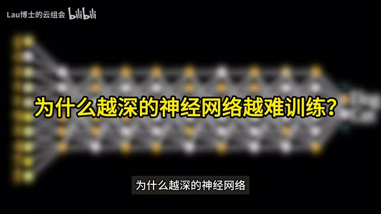
00:00:47–00:00:48 · 画面 01400:00:48–00:00:49 · 画面 015
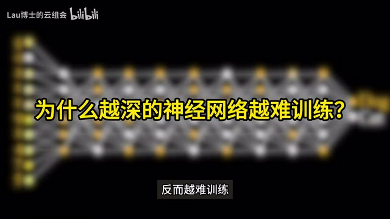
00:00:48–00:00:49 · 画面 01500:00:49–00:00:51 · 画面 016
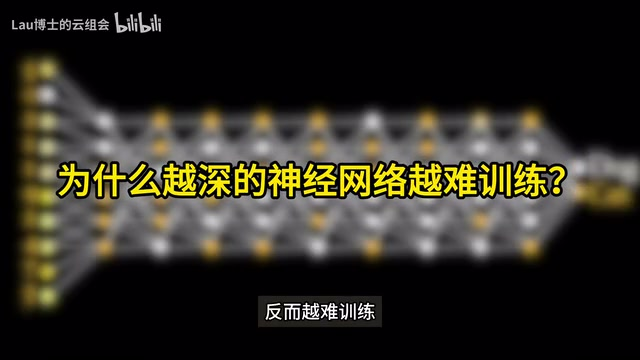
00:00:49–00:00:51 · 画面 01600:00:51–00:00:52 · 画面 017
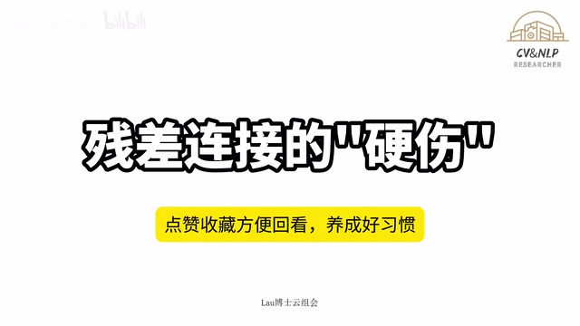
00:00:51–00:00:52 · 画面 017想象一下你正在建造一座 100 层的大楼，每一层都要把建筑材料往上运送。传统的做法是什么？很简单，每一层都把材料堆上去。第一层的材料经过第二层、第三层一直到 100 层。这就是残差连接的核心原理。我们来看一下每个符号的具体意思，HL 代表的是 DL 层的输出，HL-1 代表的是 L-1 层的输出，F
00:00:52–00:00:55 · 画面 018
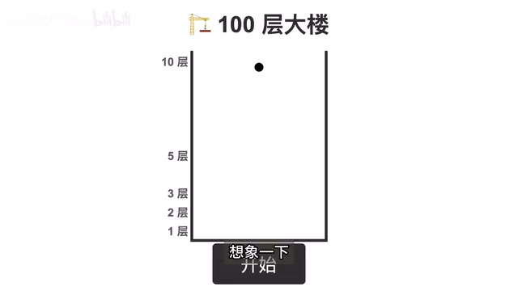
00:00:52–00:00:55 · 画面 01800:00:55–00:00:56 · 画面 019
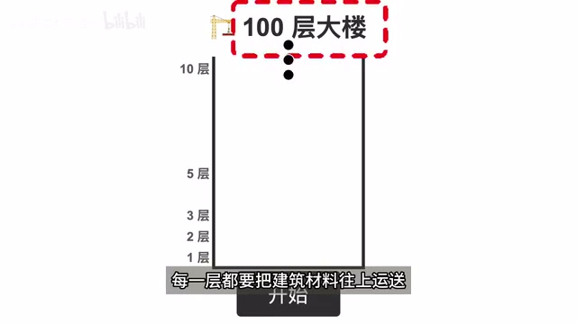
00:00:55–00:00:56 · 画面 01900:00:56–00:01:01 · 画面 020
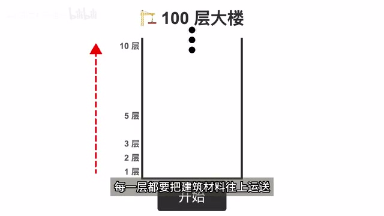
00:00:56–00:01:01 · 画面 02000:01:01–00:01:03 · 画面 021
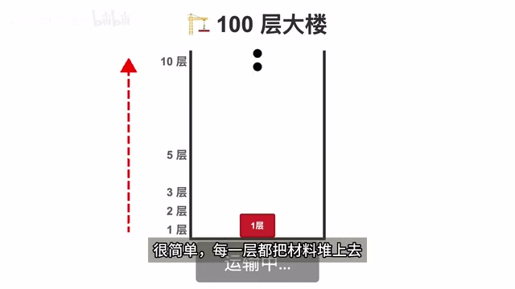
00:01:01–00:01:03 · 画面 02100:01:03–00:01:07 · 画面 022
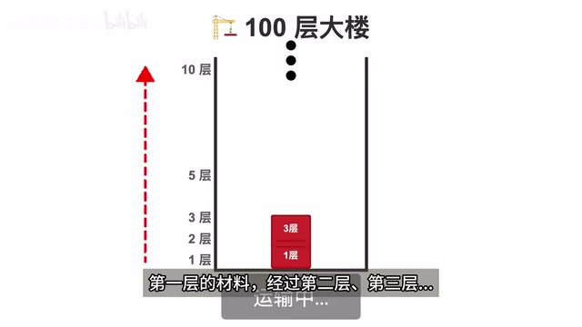
00:01:03–00:01:07 · 画面 02200:01:07–00:01:08 · 画面 023
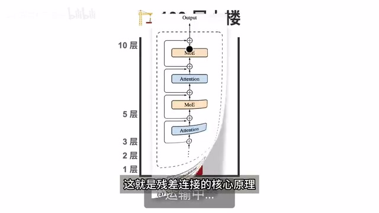
00:01:07–00:01:08 · 画面 02300:01:08–00:01:10 · 画面 024
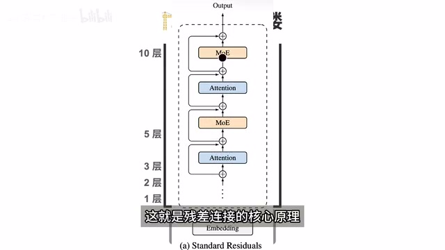
00:01:08–00:01:10 · 画面 02400:01:10–00:01:12 · 画面 025
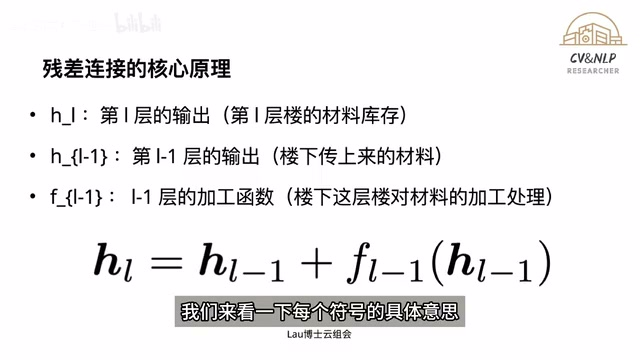
00:01:10–00:01:12 · 画面 02500:01:12–00:01:15 · 画面 026
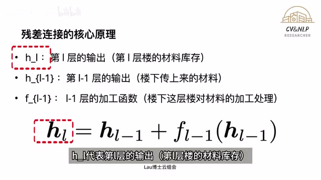
00:01:12–00:01:15 · 画面 02600:01:15–00:01:17 · 画面 027
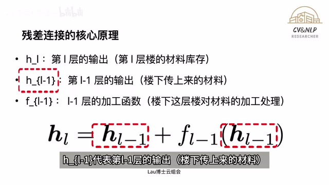
00:01:15–00:01:17 · 画面 02700:01:17–00:01:19 · 画面 028
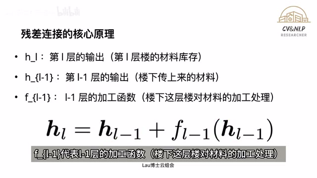
00:01:17–00:01:19 · 画面 028L-1 代表的是 L-1 层的加工函数。翻译成大白话就是，每一层楼把楼下传上来的材料加上自己加工后的新材料一起传给楼上。听起来很合理对吧？但这个加法法则呢，隐藏着两个致命缺陷。第一个问题，原始材料被淹没。想象你在做一锅汤，第一勺放了盐，第二勺放了酱油，第三勺放了醋，到 100 勺时，第一勺的盐味还剩多少？
00:01:19–00:01:22 · 画面 029
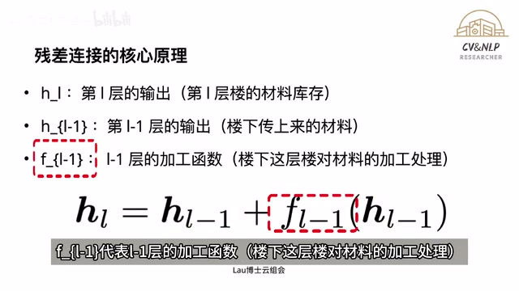
00:01:19–00:01:22 · 画面 02900:01:22–00:01:23 · 画面 030
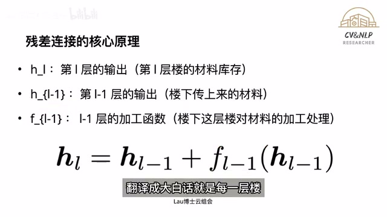
00:01:22–00:01:23 · 画面 03000:01:23–00:01:24 · 画面 031
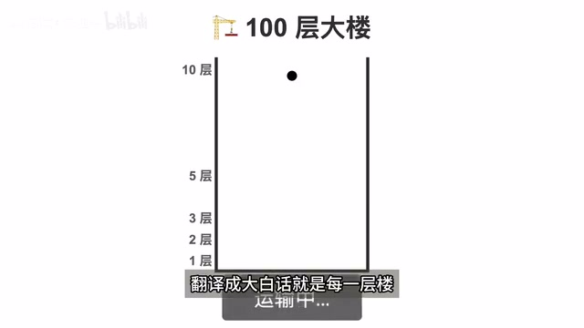
00:01:23–00:01:24 · 画面 03100:01:24–00:01:26 · 画面 032
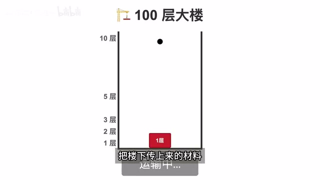
00:01:24–00:01:26 · 画面 03200:01:26–00:01:30 · 画面 033
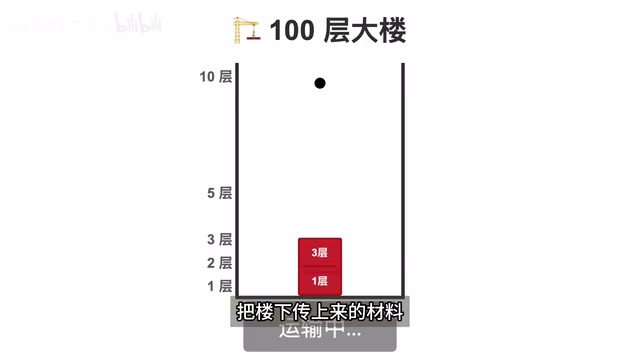
00:01:26–00:01:30 · 画面 03300:01:30–00:01:33 · 画面 034
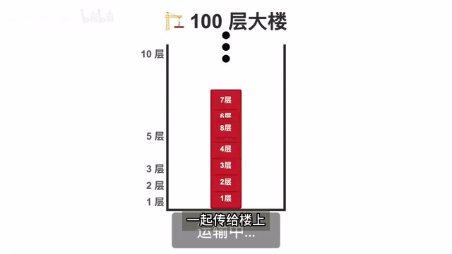
00:01:30–00:01:33 · 画面 03400:01:33–00:01:37 · 画面 035
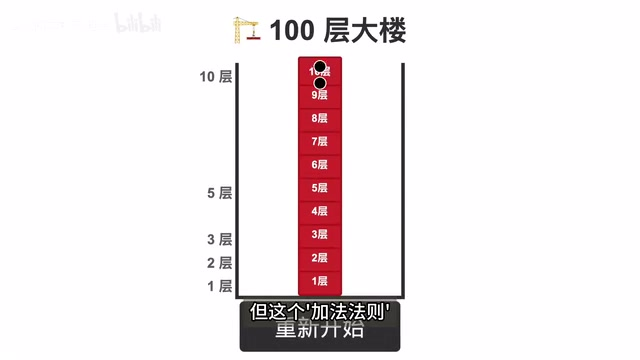
00:01:33–00:01:37 · 画面 03500:01:37–00:01:41 · 画面 036
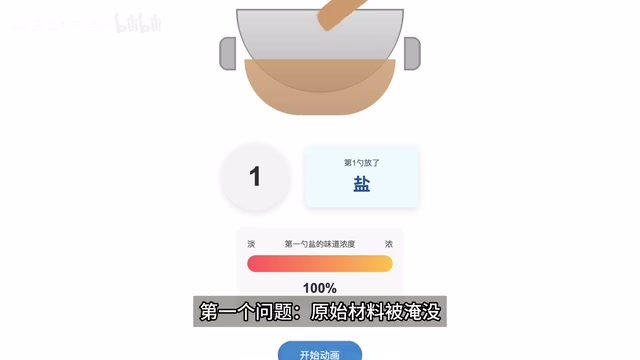
00:01:37–00:01:41 · 画面 03600:01:41–00:01:45 · 画面 037
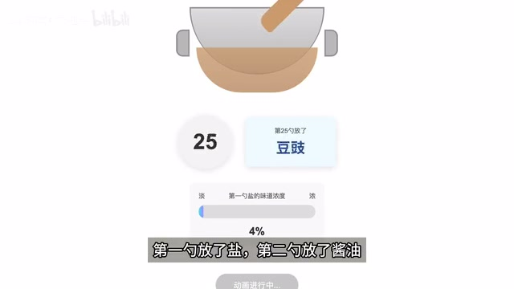
00:01:41–00:01:45 · 画面 03700:01:45–00:01:49 · 画面 038
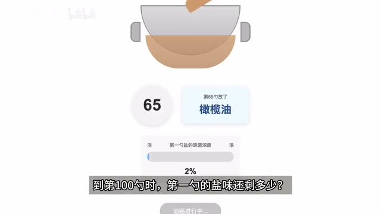
00:01:45–00:01:49 · 画面 038几乎藏不出来了。神经网络也是一样，第一层提取的原始特征传到第 100 层时被中间的 99 层的信息层层覆盖，几乎消失殆尽。第二个问题，越往后声音越大。为了让自己的贡献不被淹没，深层的网络只能大喊大叫，输出越来越大的数字。这就像一场会议中，后面的发言人为了不被前面的声音盖过，只能越说越大声。
00:01:49–00:01:53 · 画面 039
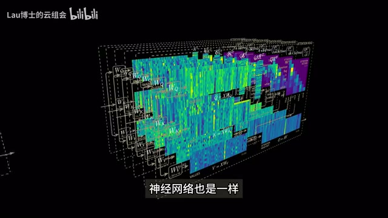
00:01:49–00:01:53 · 画面 03900:01:53–00:01:55 · 画面 040
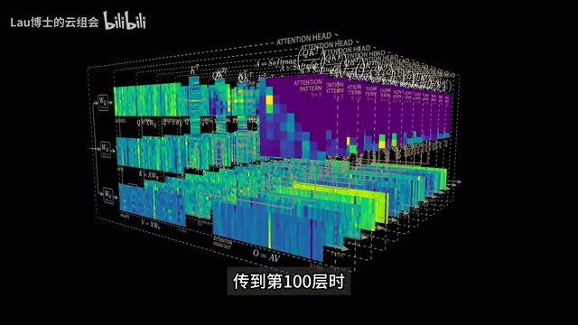
00:01:53–00:01:55 · 画面 04000:01:55–00:01:58 · 画面 041
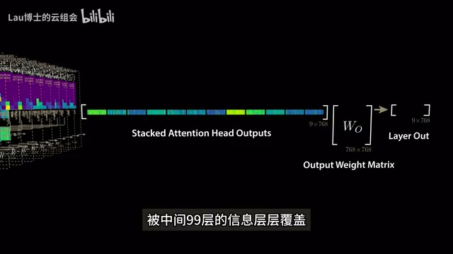
00:01:55–00:01:58 · 画面 04100:01:58–00:01:59 · 画面 042
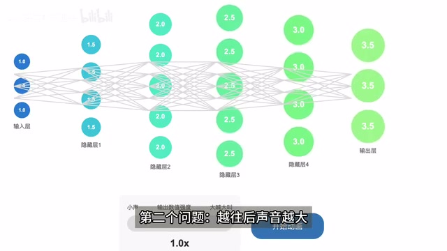
00:01:58–00:01:59 · 画面 04200:01:59–00:02:01 · 画面 043
00:01:59–00:02:01 · 画面 04300:02:01–00:02:05 · 画面 044
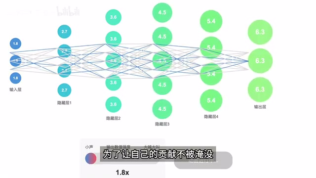
00:02:01–00:02:05 · 画面 04400:02:05–00:02:06 · 画面 045
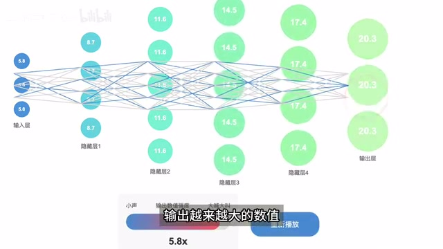
00:02:05–00:02:06 · 画面 04500:02:06–00:02:08 · 画面 046
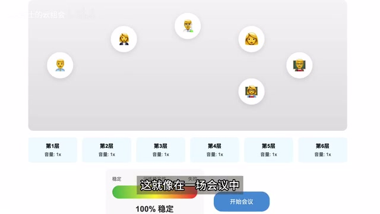
00:02:06–00:02:08 · 画面 04600:02:08–00:02:09 · 画面 047
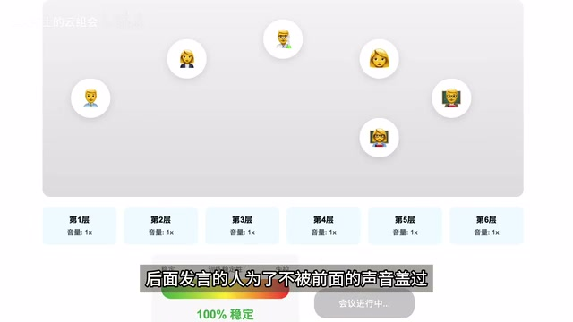
00:02:08–00:02:09 · 画面 04700:02:09–00:02:10 · 画面 048
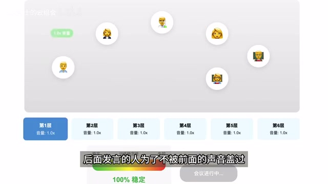
00:02:09–00:02:10 · 画面 04800:02:10–00:02:12 · 画面 049
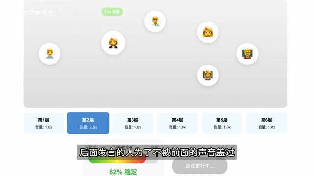
00:02:10–00:02:12 · 画面 04900:02:12–00:02:16 · 画面 050
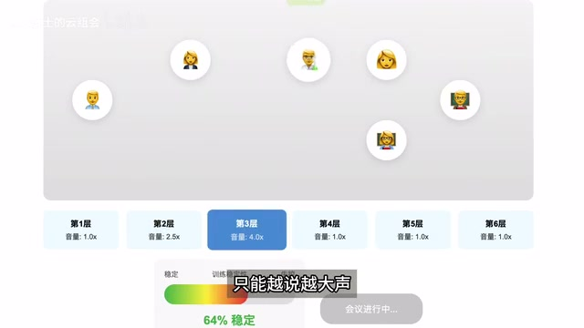
00:02:12–00:02:16 · 画面 050最后的后果是什么整个会场都失控了训练变得极不稳定这两个问题困扰了 AI 研究者整省十年
00:02:16–00:02:20 · 画面 051
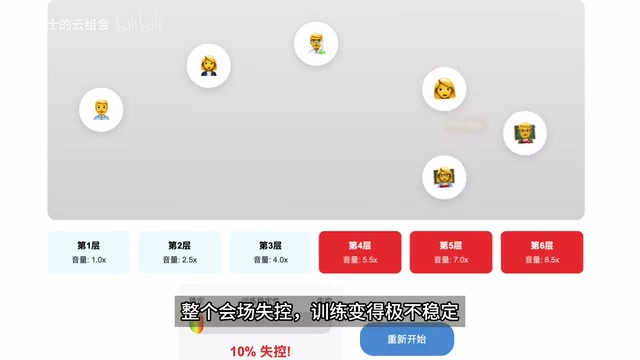
00:02:16–00:02:20 · 画面 05100:02:20–00:02:22 · 画面 052
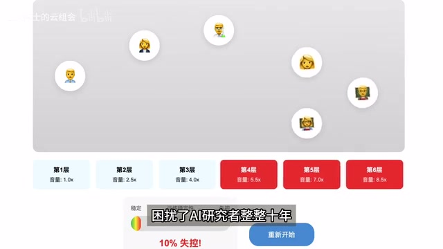
00:02:20–00:02:22 · 画面 05200:02:22–00:02:23 · 画面 053
00:02:22–00:02:23 · 画面 053转机来自一个天才般的类比。研究者发现神经网络在深度上的信息传递和 RNN 在时间上的信息传递呢，惊人的相似。RNN 是什么？它是一种处理序列的模型，比如翻译一句话，RNN 一个一个词的读，把前面所有词的信息压缩到一个状态里传给下一个时刻。这听起来是不是很像残差连接？每一层把前面的所有层的信息压缩到一个状态传递给下一层。
00:02:23–00:02:27 · 画面 054
00:02:23–00:02:27 · 画面 05400:02:27–00:02:29 · 画面 055
00:02:27–00:02:29 · 画面 05500:02:29–00:02:33 · 画面 056
00:02:29–00:02:33 · 画面 05600:02:33–00:02:37 · 画面 057
00:02:33–00:02:37 · 画面 05700:02:37–00:02:39 · 画面 058
00:02:37–00:02:39 · 画面 05800:02:39–00:02:42 · 画面 059
00:02:39–00:02:42 · 画面 05900:02:42–00:02:44 · 画面 060
00:02:42–00:02:44 · 画面 06000:02:44–00:02:46 · 画面 061
00:02:44–00:02:46 · 画面 06100:02:46–00:02:49 · 画面 062
00:02:46–00:02:49 · 画面 06200:02:49–00:02:51 · 画面 063
00:02:49–00:02:51 · 画面 063那 Transformer 是怎么解决 RNN 的问题的答案是注意力机制 Transformer 不再把信息压缩到一个状态而是让每个位置都能直接看到前面所有位置并根据重要性分配权重那问题来了既然注意力机制在时间维度上成功了为什么不在深度维度上也试一次这就是论文的核心思想把注意力机制从序列维度搬到深度维度
00:02:51–00:02:54 · 画面 064
00:02:51–00:02:54 · 画面 06400:02:54–00:02:56 · 画面 065
00:02:54–00:02:56 · 画面 06500:02:56–00:02:57 · 画面 066
00:02:56–00:02:57 · 画面 06600:02:57–00:03:01 · 画面 067
00:02:57–00:03:01 · 画面 06700:03:01–00:03:04 · 画面 068
00:03:01–00:03:04 · 画面 06800:03:04–00:03:06 · 画面 069
00:03:04–00:03:06 · 画面 06900:03:06–00:03:09 · 画面 070
00:03:06–00:03:09 · 画面 07000:03:09–00:03:13 · 画面 071
00:03:09–00:03:13 · 画面 07100:03:13–00:03:15 · 画面 072
00:03:13–00:03:15 · 画面 07200:03:15–00:03:18 · 画面 073
00:03:15–00:03:18 · 画面 07300:03:18–00:03:20 · 画面 074
00:03:18–00:03:20 · 画面 074论文的作者之一杜宇伦老师说得很形象把注意力旋转 90 度于是 Attention Residuals 就诞生了让我们看看新机制是怎样工作的传统的残差连接的公式呢?
00:03:20–00:03:24 · 画面 075
00:03:20–00:03:24 · 画面 07500:03:24–00:03:25 · 画面 076
00:03:24–00:03:25 · 画面 07600:03:25–00:03:27 · 画面 077
00:03:25–00:03:27 · 画面 07700:03:27–00:03:28 · 画面 078
00:03:27–00:03:28 · 画面 07800:03:28–00:03:31 · 画面 079
00:03:28–00:03:31 · 画面 07900:03:31–00:03:35 · 画面 080
00:03:31–00:03:35 · 画面 080我们用图书馆的例子来理解。假设你在写论文需要查阅资料，你只能看前一读者留下的笔记。如果前面有 100 个人，你只能看到最后一个人的笔记，而无法直接查阅前 99 个人的原始记录。而新方法则是你拿到了一个研究问题，从图书馆的 100 篇文献里面计算自己的问题与每篇文献的相关性，再用 Softmax 把相关性转化成概率分布。
00:03:35–00:03:40 · 画面 081
00:03:35–00:03:40 · 画面 08100:03:40–00:03:44 · 画面 082
00:03:40–00:03:44 · 画面 08200:03:44–00:03:48 · 画面 083
00:03:44–00:03:48 · 画面 08300:03:48–00:03:55 · 画面 084
00:03:48–00:03:55 · 画面 08400:03:55–00:03:59 · 画面 085
00:03:55–00:03:59 · 画面 08500:03:59–00:04:00 · 画面 086
00:03:59–00:04:00 · 画面 08600:04:00–00:04:04 · 画面 087
00:04:00–00:04:04 · 画面 087最后相关性高的文献就引用的多，相关性低的就引用的少。因此新的注意力残差公式如下。接下来让我逐个符号解释，I 从 0 到 L-1 代表之前所有的层，Vi DI 层的输出，Alpha I 到 L 从 DI 层到 DL 层的注意力权重。那这些权重不是固定的，而是学出来的。我们来看权重是怎么算的，QL 等于 WL
00:04:04–00:04:06 · 画面 088
00:04:04–00:04:06 · 画面 08800:04:06–00:04:11 · 画面 089
00:04:06–00:04:11 · 画面 08900:04:11–00:04:12 · 画面 090
00:04:11–00:04:12 · 画面 09000:04:12–00:04:15 · 画面 091
00:04:12–00:04:15 · 画面 09100:04:15–00:04:17 · 画面 092
00:04:15–00:04:17 · 画面 09200:04:17–00:04:22 · 画面 093
00:04:17–00:04:22 · 画面 09300:04:22–00:04:23 · 画面 094
00:04:22–00:04:23 · 画面 09400:04:23–00:04:26 · 画面 095
00:04:23–00:04:26 · 画面 09500:04:26–00:04:30 · 画面 096
00:04:26–00:04:30 · 画面 096第 L 层的查询向量，这是一个可学习的参数，代表这一层想找什么信息。KI 等于 VI，第 I 层的键向量，代表了第 I 层的输出，这一层有什么信息。举个例子，假设第 50 层在计算它需要参考之前的信息，传统的方法只能看第 49 层的输出，而新方法呢可以同时看第 0 层到第 49 层共 50 个来源。
00:04:30–00:04:34 · 画面 097
00:04:30–00:04:34 · 画面 09700:04:34–00:04:36 · 画面 098
00:04:34–00:04:36 · 画面 09800:04:36–00:04:40 · 画面 099
00:04:36–00:04:40 · 画面 09900:04:40–00:04:42 · 画面 100
00:04:40–00:04:42 · 画面 10000:04:42–00:04:44 · 画面 101
00:04:42–00:04:44 · 画面 10100:04:44–00:04:47 · 画面 102
00:04:44–00:04:47 · 画面 10200:04:47–00:04:49 · 画面 103
00:04:47–00:04:49 · 画面 10300:04:49–00:04:53 · 画面 104
00:04:49–00:04:53 · 画面 104可能发现第二层的特征特别相关，那就给他 0.8 的权重。第十层可能也有些用，给 0.1 的权重。第 49 层给 0.1 的权重。那这样第二层的重要信息就不会被中间的 47 层所稀释。但问题来了，如果模型有 100 层，那每一层都要看前面的所有层，那计算量会爆炸。怎么办？研究者想出一个巧妙的办法，分块策略。
00:04:53–00:04:57 · 画面 105
00:04:53–00:04:57 · 画面 10500:04:57–00:05:01 · 画面 106
00:04:57–00:05:01 · 画面 10600:05:01–00:05:05 · 画面 107
00:05:01–00:05:05 · 画面 10700:05:05–00:05:09 · 画面 108
00:05:05–00:05:09 · 画面 10800:05:09–00:05:11 · 画面 109
00:05:09–00:05:11 · 画面 10900:05:11–00:05:12 · 画面 110
00:05:11–00:05:12 · 画面 11000:05:12–00:05:16 · 画面 111
00:05:12–00:05:16 · 画面 11100:05:16–00:05:18 · 画面 112
00:05:16–00:05:18 · 画面 11200:05:18–00:05:21 · 画面 113
00:05:18–00:05:21 · 画面 11300:05:21–00:05:22 · 画面 114
00:05:21–00:05:22 · 画面 114想象一下你现在要管理一家 1000 人的公司，假设是全量注意力，那 CEO 要了解每个员工的工作，这需要记住 1000 个人的信息，太累了。如果采取分块策略，那就是把公司分成 8 个部门，每个部门 125 人，在部门内部员工之间简单协作，在部门之间 CEO 只需要关注 8 个部门经理的汇报。数学上这就是 Block AttnRes
00:05:22–00:05:26 · 画面 115
00:05:22–00:05:26 · 画面 11500:05:26–00:05:30 · 画面 116
00:05:26–00:05:30 · 画面 11600:05:30–00:05:33 · 画面 117
00:05:30–00:05:33 · 画面 11700:05:33–00:05:37 · 画面 118
00:05:33–00:05:37 · 画面 11800:05:37–00:05:39 · 画面 119
00:05:37–00:05:39 · 画面 11900:05:39–00:05:41 · 画面 120
00:05:39–00:05:41 · 画面 12000:05:41–00:05:51 · 画面 121
00:05:41–00:05:51 · 画面 121把 L 层分成 N 个块，每个块就有 S 等于 L 除以 N 层块内的各层依然用传统的加法，在这里大的 BN 是 D N 个块的层索引集合，小的 BN 是 D N 个块的代表。之前的做法是看每一个层，而现在是看每一个块。这里小 B0 与 H1 相同，都是 Token Embedding。
00:05:51–00:05:55 · 画面 122
00:05:51–00:05:55 · 画面 12200:05:55–00:05:58 · 画面 123
00:05:55–00:05:58 · 画面 12300:05:58–00:05:59 · 画面 124
00:05:58–00:05:59 · 画面 12400:05:59–00:06:03 · 画面 125
00:05:59–00:06:03 · 画面 12500:06:03–00:06:05 · 画面 126
00:06:03–00:06:05 · 画面 12600:06:05–00:06:07 · 画面 127
00:06:05–00:06:07 · 画面 12700:06:07–00:06:11 · 画面 128
00:06:07–00:06:11 · 画面 128第二部分是之前所有块的代表第三部分是当前块的部分和效果如何呢?实验发现即便模型有上百层只要分成大约 8 个块就能获得几乎全部的性能提升复杂度从 OL 的平方降到了 ON 的平方 100 层的全量注意力就需要 100 乘以 100 也就是 1 万次的计算
00:06:11–00:06:12 · 画面 129
00:06:11–00:06:12 · 画面 12900:06:12–00:06:15 · 画面 130
00:06:12–00:06:15 · 画面 13000:06:15–00:06:17 · 画面 131
00:06:15–00:06:17 · 画面 13100:06:17–00:06:23 · 画面 132
00:06:17–00:06:23 · 画面 13200:06:23–00:06:24 · 画面 133
00:06:23–00:06:24 · 画面 13300:06:24–00:06:27 · 画面 134
00:06:24–00:06:27 · 画面 13400:06:27–00:06:30 · 画面 135
00:06:27–00:06:30 · 画面 13500:06:30–00:06:34 · 画面 136
00:06:30–00:06:34 · 画面 13600:06:34–00:06:36 · 画面 137
00:06:34–00:06:36 · 画面 137而 8 个块只需要 8 乘 8 等于 64 次的计算代价，是什么推理的延迟增加不到 2%用 2%的代价换一个更聪明的生成网络，值不值？数据给出了答案。研究团队在 Kimi Linear 的架构上做了一次全面的测试，这是一个 48B 参数的大模型，总参数了 480 亿。
00:06:36–00:06:38 · 画面 138
00:06:36–00:06:38 · 画面 13800:06:38–00:06:41 · 画面 139
00:06:38–00:06:41 · 画面 13900:06:41–00:06:46 · 画面 140
00:06:41–00:06:46 · 画面 14000:06:46–00:06:48 · 画面 141
00:06:46–00:06:48 · 画面 14100:06:48–00:06:49 · 画面 142
00:06:48–00:06:49 · 画面 14200:06:49–00:07:03 · 画面 143
00:06:49–00:07:03 · 画面 143激活的参数是 30 亿，在多步推理的任务上它的提升特别明显。像 GPQA 的这种极难的研究生级别的问答的任务分数直接涨了 7.5 分。那像 Math 的数学推理提升了 3.6 分，代码生成任务 HumanEval 也涨了 3.1 分。在知识类的任务上同样表现了稳健，MMLU 的知识理解提升了 1.1 分，TriviaQA 提升了 1.9 分。尤其是多步推理这块。
00:07:03–00:07:04 · 画面 144
00:07:03–00:07:04 · 画面 14400:07:04–00:07:09 · 画面 145
00:07:04–00:07:09 · 画面 14500:07:09–00:07:11 · 画面 146
00:07:09–00:07:11 · 画面 14600:07:11–00:07:14 · 画面 147
00:07:11–00:07:14 · 画面 14700:07:14–00:07:17 · 画面 148
00:07:14–00:07:17 · 画面 14800:07:17–00:07:21 · 画面 149
00:07:17–00:07:21 · 画面 14900:07:21–00:07:23 · 画面 150
00:07:21–00:07:23 · 画面 15000:07:23–00:07:27 · 画面 151
00:07:23–00:07:27 · 画面 151大幅提升证明了改进后的深度信息流真的让模型更会思考了。最后这篇论文真正的价值在它尝试挑战统治深度学习 10 年的 ResNet 的方式。正如 Jerry Tworek 所说，这篇论文启发我们应当重新思考之前的一切。如果说过去 10 年是深度学习 1.0，靠算力、数据和深度堆出性能，那它打开的很可能就是深度学习 2.0 的大门。
00:07:27–00:07:31 · 画面 152
00:07:27–00:07:31 · 画面 15200:07:31–00:07:32 · 画面 153
00:07:31–00:07:32 · 画面 15300:07:32–00:07:33 · 画面 154
00:07:32–00:07:33 · 画面 15400:07:33–00:07:37 · 画面 155
00:07:33–00:07:37 · 画面 15500:07:37–00:07:38 · 画面 156
00:07:37–00:07:38 · 画面 15600:07:38–00:07:41 · 画面 157
00:07:38–00:07:41 · 画面 15700:07:41–00:07:52 · 画面 158
00:07:41–00:07:52 · 画面 15800:07:52–00:07:54 · 画面 159
00:07:52–00:07:54 · 画面 159从无脑叠加转向更高效更可控的深度信息流，放到行业视角，这也恰好体现出中美 AI 的路线差异。美国主攻底层理论架构革新，试图从根本上重构模型；国内更侧重工程落地场景效率，快速补齐应用生态。没有绝对优劣，但下一代 AI 的胜负手一定是理论创新加工程落地的结合。AI 行业没有永恒的铁律，只有不断被推翻的理所当然。
00:07:54–00:07:56 · 画面 160
00:07:54–00:07:56 · 画面 16000:07:56–00:07:59 · 画面 161
00:07:56–00:07:59 · 画面 16100:07:59–00:08:02 · 画面 162
00:07:59–00:08:02 · 画面 16200:08:02–00:08:07 · 画面 163
00:08:02–00:08:07 · 画面 16300:08:07–00:08:08 · 画面 164
00:08:07–00:08:08 · 画面 16400:08:08–00:08:13 · 画面 165
00:08:08–00:08:13 · 画面 16500:08:13–00:08:14 · 画面 166
00:08:13–00:08:14 · 画面 16600:08:14–00:08:18 · 画面 167
00:08:14–00:08:18 · 画面 16700:08:18–00:08:21 · 画面 168
00:08:18–00:08:21 · 画面 16800:08:21–00:08:25 · 画面 169
00:08:21–00:08:25 · 画面 169OK，以上就是本期视频的全部内容，欢迎关注我们，成为云组会的一员。
00:08:25–00:08:29 · 画面 170
00:08:25–00:08:29 · 画面 17000:08:29–00:08:29 · 画面 171
00:08:29–00:08:29 · 画面 171转写与来源说明 · 0 个自动复核提示
保留 21 个原始语音片段，0 个片段触发自动复核提示。提示仅用于定位可能的术语、重复或识别问题，不等于已确认错误。
讲解画面为源视频截图（640×360），不是可编辑 PPT 文件。全片按每秒 2 帧扫描内容变化，逐步展开页保留；连续动画保留代表画面。清晰度受源视频限制。
原视频：paper/合集_2026-10-16_论文精读/颠覆10年共识！马斯克叹服！Kimi：AttnRes【论文精读】.mp4
SHA-256：1900cefa75fea4a03a0efe21e1d0ef3737ce1aa08bd384a1d7b82ceac287c7aa
全文按视频语音与画面制作。原论文可从上方链接下载；完整资料包保留全文、原始逐字稿、字幕和校对记录。